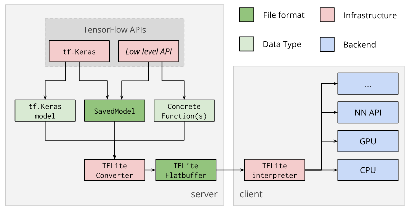
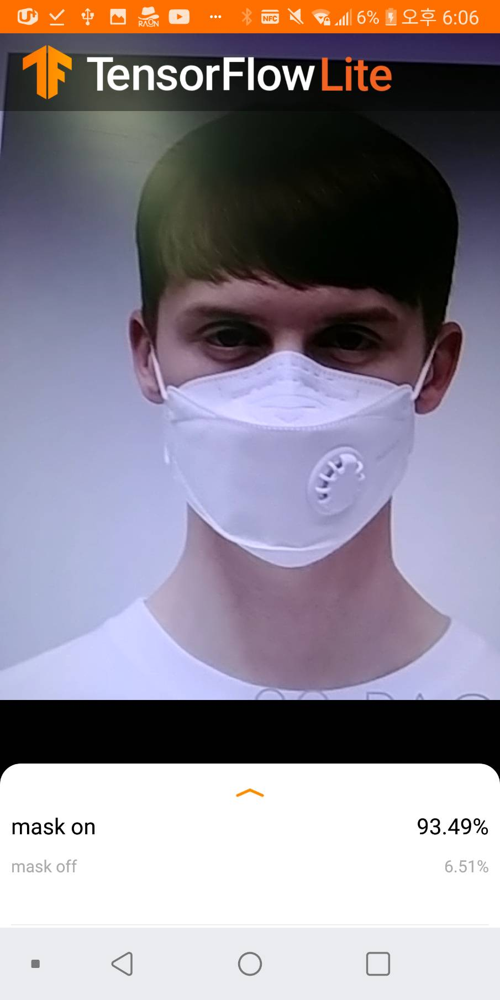

CMS
소개
조원
기술
Tensorflow JavaScript
Tensorflow/KERAS
Tensorflow Lite
접속하기
로그인
회원가입
TensorFlow Lite
What is TensorFlow Lite?
TensorFlow Lite는 개발자가 휴대기기, 내장형 기기 및 IoT 기기에서 TensorFlow 모델을 실행할 수 있도록 지원하는 도구 모음입니다.
기기 내 지연 시간이 짧고 바이너리 크기가 작은 머신러닝 추론을 지원합니다.
TensorFlow Lite 구성요소
TensorFlow Lite 인터프리터
- 스마트폰, 내장형 Linux 기기 및 마이크로 컨트롤러를 비롯하여 다양한 하드웨어 유형에서 특별히 최적화된 모델을 실행합니다.
TensorFlow Lite 변환기
- TensorFlow 모델을 인터프리터가 사용할 수 있는 효율적인 형식으로 변환하며, 최적화를 도입하여 바이너리 크기 및 성능을 향상할 수 있습니다.
에지의 머신러닝
TensorFlow Lite는 서버에서 데이터를 주고받는 대신 네트워크 '에지'의 기기에서 머신러닝을 쉽게 실행할 수 있도록 설계되었습니다. 이러한 설계를 통해 개발자가 기기에서 머신러닝을 실행할 때 다음 사항을 개선할 수 있습니다.
지연 시간
: 서버까지의 왕복이 없습니다.
개인정보 보호
: 데이터가 기기를 벗어나지 않아도 됩니다.
연결
: 인터넷 연결이 필요하지 않습니다.
전력 소비
: 네트워크 연결에는 전력이 필요합니다.
FlatBuffer
TensorFlow Lite FlatBuffer 파일은 클라이언트 기기(예: 휴대기기, 내장형 기기)에 배포되면 TensorFlow Lite 인터프리터를 사용하여 로컬로 실행됩니다. 이 변환 프로세스는 아래 다이어그램에 나와 있습니다.

DEMO App Example

데모 APK 다운로드